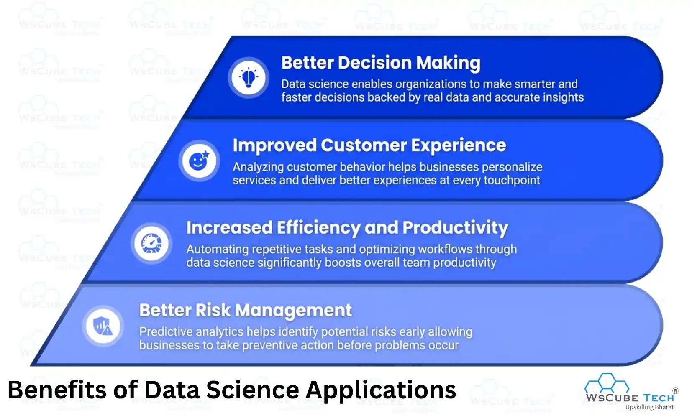
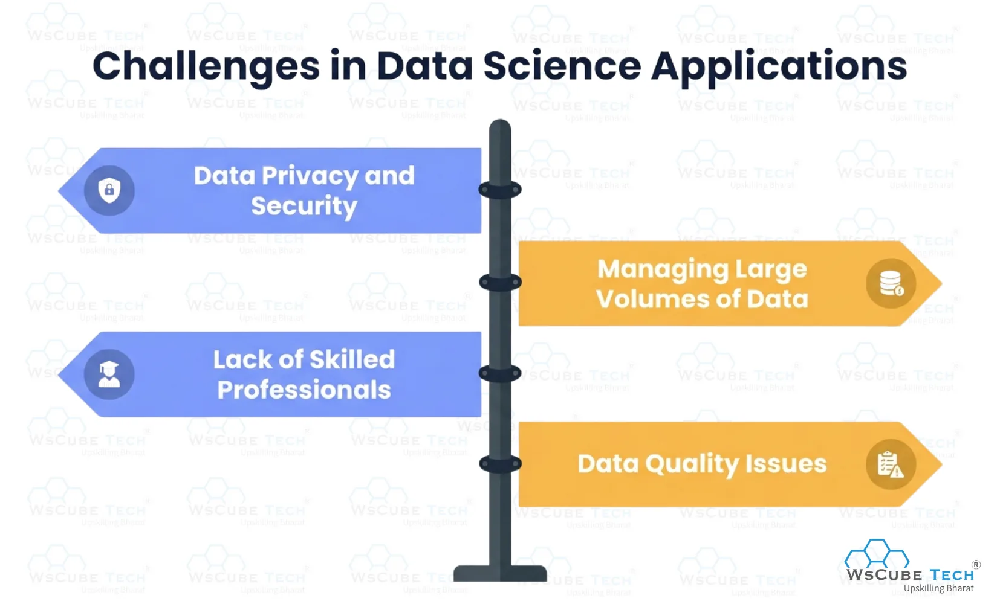
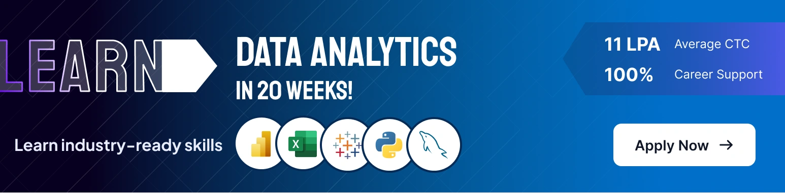

Data science is changing the way industries operate in today’s digital world. From online recommendations to smart healthcare systems, it is helping businesses improve services and make faster, smarter decisions.
Organizations generate huge amounts of data every day through websites, apps, and digital platforms. This data helps businesses understand customers and improve services.
That is why it is important to understand the applications of data science. It helps organizations predict trends, automate processes, and solve complex business problems more effectively.
In this blog, we will explore various applications of data science with practical examples from different industries. You will also learn how data science is transforming modern businesses and shaping the future of technology.
What is Data Science?
Data science is a field that uses data, algorithms, statistics, and technology to find useful information and solve problems. It helps businesses and organizations analyze large amounts of data to make better decisions, predict future trends, and improve overall performance. Below are the key components of data science:
- Data Collection: Gathering data from websites, apps, databases, and other digital sources.
- Data Analysis: Examining data to find patterns, trends, and useful insights.
- Machine Learning: Using algorithms to train systems for predictions and automation.
- Data Visualization: Presenting data through charts, graphs, and dashboards for better understanding.
- Big Data Technologies: Managing and processing large volumes of structured and unstructured data.
- Decision Making: Using insights from data to improve business strategies and operations.
Why Data Science is Important
Below are the main reasons why data science is important in modern businesses and industries today:
1. Better Decision Making
Data science helps organizations analyze large amounts of data to make faster, more accurate, and more informed decisions. It also helps businesses reduce risks and improve planning strategies effectively.
2. Improved Customer Experience
Businesses use data science to understand customer behavior, preferences, and needs, helping them deliver personalized services, recommendations, and better customer support.
3. Predicting Future Trends
Data science helps companies predict market trends, customer demands, and future risks using historical data, machine learning models, and predictive analytics techniques.
4. Business Growth and Efficiency
Organizations use data science to automate tasks, improve productivity, reduce operational costs, and increase overall business efficiency. It also helps businesses improve performance and gain competitive advantages.
Real-World Applications of Data Science (Uses)
Now, let’s explore the applications of data science in various fields and understand how different industries use data science to improve efficiency, solve problems, and make smarter decisions:
1. Data Science in Healthcare
Data science is playing a major role in improving modern healthcare services. It helps hospitals and medical professionals make better decisions, manage patient data efficiently, and provide faster treatments with the help of advanced technologies like AI and machine learning. Here are some major applications of data science in healthcare:
- Disease Prediction: Data science helps doctors predict diseases early by analyzing medical records, symptoms, and patient history. This improves treatment accuracy and reduces health risks.
- Medical Image Analysis: AI-powered systems analyze X-rays, MRIs, and CT scans to detect diseases quickly and accurately. This supports doctors in faster diagnosis and treatment planning.
- Personalized Treatment: Data science helps healthcare providers create personalized treatment plans based on patient data, genetics, and medical history for better healthcare outcomes.
- Drug Discovery: Pharmaceutical companies use data science to analyze research data and develop new medicines faster, reducing both research time and development costs.
- Patient Monitoring: Wearable devices and healthcare apps collect real-time health data, helping doctors monitor patients remotely and provide timely medical support.
2. Data Science in Banking and Finance
Data science helps banks and financial companies improve security, detect fraud, manage risks, and provide better customer services. It also helps financial institutions analyze customer data and make smarter financial decisions. Here are some major applications of data science in banking and finance:
- Fraud Detection: Data science helps banks identify suspicious transactions and detect fraudulent activities in real time, improving security and reducing financial losses.
- Risk Management: Financial institutions use data science to analyze market trends, customer behavior, and financial records to reduce investment and credit risks.
- Customer Personalization: Banks use customer data to provide personalized offers, financial advice, and better banking experiences based on user preferences and spending habits.
- Credit Scoring: Data science helps banks evaluate customer creditworthiness by analyzing financial history, repayment behavior, and transaction records before approving loans.
- Algorithmic Trading: Financial companies use machine learning and predictive analytics to analyze market data and make faster, data-driven trading decisions.
3. Data Science in E-Commerce
Data science helps e-commerce companies improve customer experience, increase sales, and optimize business operations. It is used to analyze customer behavior, recommend products, and improve marketing strategies. Here are some major applications of data science in e-commerce:
- Product Recommendations: E-commerce websites use data science to recommend products based on customer searches, purchase history, and browsing behavior.
- Customer Behavior Analysis: Businesses analyze customer data to understand shopping patterns, preferences, and buying habits for better decision-making.
- Personalized Marketing: Data science helps companies create personalized ads, offers, and email campaigns to attract more customers and increase sales.
- Inventory Management: E-commerce companies use predictive analytics to manage stock levels, reduce shortages, and improve supply chain operations.
- Dynamic Pricing: Data science helps businesses adjust product prices based on demand, competition, customer behavior, and market trends.
4. Data Science in Education
Data science helps educational institutions improve learning experiences, track student performance, and enhance teaching methods. Here are some major applications of data science in education:
- Student Performance Analysis: Educational institutions use data science to analyze student performance, identify weak areas, and improve learning outcomes.
- Personalized Learning: Online learning platforms use data science to provide customized courses, study materials, and recommendations based on student progress.
- Predictive Analytics: Data science helps institutions predict student performance, dropout risks, and academic success using historical and real-time data.
- Automated Grading: AI-powered systems automatically evaluate assignments, quizzes, and exams, saving time for teachers and improving accuracy.
- Course Recommendation Systems: Educational platforms recommend suitable courses and learning resources based on student interests, skills, and learning behavior.
5. Data Science in Social Media
Data science helps social media platforms analyze user behavior, improve content recommendations, and enhance user engagement. Platforms like Instagram, Facebook, and YouTube use data science to deliver personalized experiences and targeted advertisements. Here are some major applications of data science in social media:
- Content Recommendation: Social media platforms recommend posts, videos, and reels based on user interests, search history, and engagement patterns.
- Targeted Advertising: Data science helps companies show personalized ads to users based on their preferences, online activity, and demographics.
- Sentiment Analysis: Businesses analyze user comments, reviews, and social media posts to understand public opinions and customer feedback.
- Trend Analysis: Social media platforms use data science to identify trending topics, hashtags, and viral content in real time.
- Spam and Fake Account Detection: AI and machine learning models help platforms detect spam accounts, fake profiles, and harmful activities automatically.
Recommended Professional Certificates
Data Analytics Course with Gen AI
Data Science Course with Internship & Placement Support
6. Data Science in Marketing and Advertising
Data science helps businesses improve marketing strategies, understand customer behavior, and increase advertising performance. Companies use data science to analyze customer data, create targeted campaigns, and improve customer engagement. Here are some major applications of data science in marketing and advertising:
- Customer Segmentation: Businesses use data science to divide customers into groups based on interests, behavior, and purchasing patterns for better marketing strategies.
- Targeted Advertising: Data science helps companies show personalized advertisements to the right audience based on user preferences and online activities.
- Marketing Campaign Analysis: Businesses analyze campaign performance, customer responses, and engagement data to improve future marketing strategies and increase conversions.
- Customer Behavior Analysis: Companies study customer interactions and buying habits to understand market trends and improve customer experiences.
- Sales Prediction: Predictive analytics helps businesses forecast sales trends, customer demand, and marketing outcomes using historical and real-time data.
7. Data Science in Manufacturing
Data science helps manufacturing companies improve production efficiency, reduce costs, and maintain product quality. It is used to analyze machine data, automate operations, and improve supply chain management. Here are some major applications of data science in manufacturing:
- Predictive Maintenance: Data science helps manufacturers predict machine failures before they happen, reducing downtime and maintenance costs.
- Quality Control: Manufacturers use data science to monitor product quality, detect defects, and improve production accuracy during manufacturing processes.
- Supply Chain Optimization: Data science helps companies manage inventory, improve logistics, and optimize supply chain operations for faster production and delivery.
- Production Planning: Manufacturers analyze production data to improve workflow, reduce waste, and increase operational efficiency.
- Automation and Robotics: AI and machine learning technologies help automate manufacturing tasks, improving productivity and reducing human errors in factories.
8. Data Science in Transportation and Logistics
Data science helps transportation and logistics companies improve delivery services, reduce costs, and optimize routes. Companies use data science to analyze traffic patterns, manage supply chains, and improve fleet operations. Here are some major applications of data science in transportation and logistics:
- Route Optimization: Data science helps companies find the fastest and most efficient delivery routes by analyzing traffic, weather, and road conditions.
- Demand Forecasting: Logistics companies use predictive analytics to estimate customer demand and improve inventory and delivery planning.
- Supply Chain Optimization: Data science helps businesses improve supply chain operations, reduce delays, and increase overall delivery efficiency.
- Predictive Maintenance: Transportation companies use data science to predict vehicle maintenance needs and reduce unexpected breakdowns.
- Fleet Management: Businesses analyze fuel usage, vehicle performance, and driver behavior to improve fleet efficiency and reduce operational costs.
9. Data Science in Agriculture
Data science is helping the agriculture industry improve crop production, reduce waste, and increase farming efficiency. Farmers and agricultural companies use data science to analyze weather conditions, soil quality, and crop health for better farming decisions. Here are some major applications of data science in agriculture:
- Crop Monitoring: Farmers use data science to monitor crop growth, soil conditions, and plant health using sensors and satellite data.
- Weather Forecasting: Data science helps farmers predict weather conditions, rainfall, and climate changes for better farming and irrigation planning.
- Precision Farming: Agricultural companies use data science to optimize fertilizer usage, irrigation systems, and farming techniques to improve crop yield.
- Pest and Disease Detection: AI and machine learning models help detect crop diseases and pest attacks early, reducing crop damage and losses.
- Supply Chain Management: Data science helps manage agricultural supply chains, improve food distribution, and reduce storage and transportation waste.
10. Data Science in Cybersecurity
Data science helps organizations improve security, detect cyber threats, and protect sensitive data from online attacks. Companies use data science and machine learning to identify suspicious activities, prevent data breaches, and improve network security. Here are some major applications of data science in cybersecurity:
- Threat Detection: Data science helps identify malware, phishing attacks, and suspicious network activities in real time to improve cybersecurity.
- Fraud Prevention: Businesses use data science to detect fraudulent transactions, unauthorized access, and cybercrimes by analyzing user behavior and activity patterns.
- Risk Analysis: Organizations analyze security data to identify vulnerabilities, assess risks, and improve cybersecurity strategies.
- Anomaly Detection: Machine learning models detect unusual activities and alert security teams about possible cyber threats or system breaches.
- Data Protection: Data science helps companies secure sensitive information through advanced encryption, monitoring systems, and cybersecurity tools.
11. Data Science in Entertainment and Streaming Platforms
Data science helps entertainment and streaming platforms improve user experience, recommend content, and increase audience engagement. Platforms like Netflix, Spotify, and YouTube use data science to analyze user preferences and viewing behavior. Here are some major applications of data science in entertainment and streaming platforms:
- Content Recommendation: Streaming platforms recommend movies, songs, and videos based on user interests, watch history, and listening behavior.
- Audience Analysis: Entertainment companies analyze viewer preferences and engagement data to create more popular and relevant content.
- Personalized Experience: Data science helps platforms provide personalized playlists, recommendations, and user interfaces for better user satisfaction.
- Trend Prediction: Companies use predictive analytics to identify trending content, audience interests, and future entertainment demands.
- Advertisement Optimization: Streaming platforms use data science to display targeted advertisements based on user behavior and content preferences.
Upcoming Masterclass
Attend our live classes led by experienced and desiccated instructors of Wscube Tech.


12. Data Science in Sports Analytics
Data science helps sports organizations improve player performance, team strategies, and fan engagement. It analyzes player statistics and match data for better decision-making. Here are some major uses of data science in sports analytics:
- Player Performance Analysis: Teams use data science to track player performance, fitness levels, and match statistics for better training and strategy planning.
- Injury Prediction: Data science helps predict player injuries by analyzing fitness data, workload, and physical performance patterns.
- Game Strategy Optimization: Coaches and analysts use data science to study opponents, improve tactics, and create winning game strategies.
- Fan Engagement: Sports organizations analyze fan behavior and preferences to improve marketing campaigns and audience experiences.
- Talent Identification: Data science helps teams identify talented players by analyzing performance data, skills, and match statistics.
13. Data Science in Weather Forecasting
Data science helps weather forecasting systems analyze climate data and predict weather conditions more accurately. Here are some major applications of data science in weather forecasting:
- Weather Prediction: Data science analyzes historical and real-time weather data to predict temperature, rainfall, storms, and climate conditions accurately.
- Disaster Management: Governments use data science to predict natural disasters like floods, cyclones, and hurricanes for better emergency planning and safety measures.
- Climate Analysis: Scientists use data science to study climate changes, environmental patterns, and global warming trends for better research and planning.
14. Data Science in Search Engines
Data science helps search engines provide accurate search results, improve user experience, and understand user queries effectively. Search engines like Google use data science and AI to analyze search behavior and rank web pages. Here are some major applications of data science in search engines:
- Search Result Ranking: Data science helps search engines rank web pages based on relevance, keywords, user behavior, and content quality.
- Personalized Search Results: Search engines provide personalized results by analyzing user interests, location, and previous search history.
- Voice Search Optimization: AI and data science improve voice search systems by understanding spoken language and delivering accurate search results.
- Spam Detection: Search engines use machine learning models to identify spam websites, fake content, and harmful web pages automatically.
- Search Trend Analysis: Data science helps analyze popular search queries and trending topics to improve search engine performance and recommendations.
15. Data Science in Telecommunications
Data science helps telecommunication companies improve network performance, customer services, and operational efficiency. Telecom companies use data science to analyze user data and optimize communication networks. Here are some major applications of data science in telecommunications:
- Network Optimization: Data science helps telecom companies analyze network traffic and improve internet speed, connectivity, and overall network performance.
- Customer Churn Prediction: Telecom companies use predictive analytics to identify customers likely to leave services and improve customer retention strategies.
- Fraud Detection: Data science helps detect fraudulent activities, unusual usage patterns, and unauthorized access in telecommunication networks.
16. Data Science in Real Estate
Data science helps the real estate industry analyze property data, predict market trends, and improve customer experiences. Real estate companies use data science to make better investment and pricing decisions. Here are some major uses of data science in real estate:
- Property Price Prediction: Data science helps estimate property prices by analyzing market trends, location, demand, and historical sales data.
- Market Trend Analysis: Real estate companies use data science to study housing market trends, customer preferences, and investment opportunities.
- Customer Recommendation Systems: Property platforms recommend suitable properties to buyers based on budget, location, and customer preferences.
- Risk Assessment: Data science helps investors analyze financial risks, property values, and future market conditions before making investments.
Explore More on Data Related Guides
17. Data Science in Insurance Industry
Data science helps insurance companies improve risk analysis, detect fraud, and provide better customer services. Insurance providers use data science to analyze customer data and improve claim management processes. Here are some major applications of data science in the insurance industry:
- Fraud Detection: Data science helps insurance companies identify fake claims and suspicious activities by analyzing customer and transaction data.
- Risk Assessment: Insurance providers use predictive analytics to evaluate customer risks and calculate suitable insurance premiums accurately.
- Claim Management: Data science helps automate claim processing, reduce paperwork, and improve claim approval speed and accuracy.
- Customer Personalization: Insurance companies use customer data to provide personalized insurance plans, offers, and better customer support services.
18. Data Science in Travel and Tourism
Data science helps the travel and tourism industry improve customer experiences, optimize pricing, and manage travel services efficiently. Travel companies use data science to analyze customer preferences and booking patterns. Here are some major applications of data science in travel and tourism:
- Personalized Travel Recommendations: Travel platforms recommend hotels, destinations, and travel packages based on customer interests and booking history.
- Price Optimization: Airlines and travel companies use data science to adjust ticket and hotel prices based on demand, season, and market trends.
- Customer Behavior Analysis: Businesses analyze customer preferences, reviews, and travel patterns to improve travel services and marketing strategies.
- Demand Forecasting: Data science helps companies predict travel demand, manage bookings, and improve resource planning during peak seasons.
19. Data Science in Government and Public Services
Data science helps governments improve public services, manage resources, and make data-driven decisions for better administration. Government organizations use data science to analyze public data and improve operational efficiency. Here are some major applications of data science in government and public services:
- Smart City Management: Governments use data science to manage traffic systems, public transportation, energy usage, and urban planning efficiently.
- Crime Analysis: Law enforcement agencies analyze crime data to identify crime patterns, improve security, and prevent criminal activities.
- Public Health Monitoring: Governments use data science to track disease outbreaks, monitor healthcare systems, and improve public health services.
- Resource Allocation: Data science helps governments distribute resources, budgets, and public services more effectively based on data analysis.
- Disaster Management: Governments use predictive analytics to prepare for natural disasters, improve emergency responses, and reduce risks during crises.
20. Data Science in Energy Sector
Data science helps the energy sector improve energy production, reduce costs, and manage resources efficiently. Energy companies use data science to analyze energy consumption and optimize operations. Here are some major applications of data science in the energy sector:
- Energy Consumption Analysis: Data science helps companies analyze energy usage patterns and improve energy efficiency in industries and households.
- Predictive Maintenance: Energy companies use data science to predict equipment failures and reduce downtime in power plants and energy systems.
- Renewable Energy Optimization: Data science helps manage solar, wind, and other renewable energy sources by analyzing weather and energy production data.
21. Data Science in Retail Industry
Data science helps retail businesses improve customer experience, manage inventory, and increase sales. Retail companies use data science to analyze customer behavior and optimize business operations. Here are some major applications of data science in the retail industry:
- Customer Behavior Analysis: Retailers analyze customer preferences, shopping habits, and purchase history to improve products and services.
- Inventory Management: Data science helps businesses manage stock levels, reduce shortages, and improve supply chain efficiency.
- Personalized Recommendations: Retail platforms recommend products to customers based on browsing history, interests, and previous purchases.
- Sales Forecasting: Retail companies use predictive analytics to estimate customer demand and improve sales and marketing strategies.
22. Data Science in Artificial Intelligence
Data science plays an important role in artificial intelligence by helping machines learn from data and make intelligent decisions. AI systems use data science techniques to improve automation and problem-solving capabilities. Here are some major applications of data science in artificial intelligence:
- Machine Learning Models: Data science helps train machine learning models using large datasets for predictions and automated decision-making.
- Natural Language Processing: AI systems use data science to understand human language, improve chatbots, and support voice assistants.
- Image Recognition: Data science helps AI systems recognize images, faces, and objects for applications like security and healthcare.
- Recommendation Systems: AI-powered platforms use data science to recommend products, movies, music, and content based on user behavior.
- Automation Systems: Data science supports AI automation in industries like manufacturing, healthcare, customer service, and transportation.
Explore Our Data Related Courses
| Data Analytics Course | Live Internship + 100% Job Support |
| Business Analytics Course | Live Internship + 100% Job Support |
| Data Science Course | Live Internship + 100% Job Support |
23. Data Science in Fraud Detection
Data science helps businesses and financial institutions detect fraudulent activities and improve security systems. Companies use data science to analyze transactions and identify suspicious behavior patterns. Here are some major applications of data science in fraud detection:
- Transaction Monitoring: Data science helps analyze financial transactions in real time to identify suspicious or unauthorized activities quickly.
- Behavior Analysis: Companies use data science to detect unusual user behavior patterns that may indicate fraud or cyber threats.
- Risk Detection Systems: Machine learning models help businesses predict fraud risks and improve security measures across digital platforms.
24. Data Science in Recommendation Systems
Data science helps recommendation systems provide personalized suggestions based on user interests and behavior. Platforms like Netflix, Amazon, and Spotify use recommendation systems to improve user experience and engagement. Here are some major applications of data science in recommendation systems:
- Product Recommendations: E-commerce platforms recommend products to customers based on browsing history, searches, and previous purchases.
- Content Suggestions: Streaming platforms suggest movies, songs, videos, and shows according to user preferences and viewing behavior.
- Personalized User Experience: Recommendation systems help businesses deliver customized content and services for better customer satisfaction.
- Targeted Marketing: Companies use recommendation systems to show personalized advertisements and offers to the right audience.
25. Data Science in Human Resources
Data science helps human resource departments improve hiring processes, employee management, and workplace productivity. Companies use data science to analyze employee data and make better HR decisions. Here are some major applications of data science in human resources:
- Recruitment Analysis: Companies use data science to identify suitable candidates by analyzing resumes, skills, and job application data.
- Employee Performance Tracking: HR departments analyze employee performance and productivity data to improve workplace efficiency and growth.
- Employee Retention: Data science helps organizations predict employee turnover and improve retention strategies through workforce analysis.
26. Data Science in Supply Chain Management
Data science helps businesses improve supply chain operations, reduce delays, and manage inventory efficiently. Companies use data science to analyze logistics and optimize delivery processes. Here are some major applications of data science in supply chain management:
- Inventory Optimization: Data science helps companies manage stock levels, reduce shortages, and improve inventory planning efficiently.
- Demand Forecasting: Businesses use predictive analytics to estimate product demand, analyze customer buying patterns, and improve supply chain and delivery operations.
- Logistics Management: Data science helps optimize transportation routes, reduce delivery delays, and improve overall supply chain efficiency.
27. Data Science in Online Gaming
Data science helps online gaming companies improve user experience, game performance, and player engagement. Gaming platforms use data science to analyze player behavior and optimize gaming strategies. Here are some major applications of data science in online gaming:
- Player Behavior Analysis: Gaming companies analyze player activities, preferences, and gaming patterns to improve gameplay experiences.
- Personalized Recommendations: Online gaming platforms recommend games, features, and in-game content based on player interests and behavior.
- Fraud and Cheat Detection: Data science helps detect cheating activities, fake accounts, and suspicious gaming behavior automatically.
- Game Performance Optimization: Developers use data science to improve game performance, reduce server issues, and enhance gaming experiences.
28. Data Science in Smart Cities
Data science helps smart cities improve urban planning, public services, and resource management. Governments use data science to analyze city data and improve overall city operations. Here are some major applications of data science in smart cities:
- Traffic Management: Data science helps manage traffic flow, reduce congestion, and improve transportation systems in urban areas.
- Energy Management: Smart cities use data science to monitor energy usage and improve electricity distribution efficiently.
- Public Safety Monitoring: Governments analyze city data to improve security systems, emergency responses, and overall public safety services in urban areas.
29. Data Science in Robotics and Automation
Data science helps robotics and automation systems perform tasks more efficiently and make intelligent decisions. Industries use data science to improve automation processes and robotic performance. Here are some major applications of data science in robotics and automation:
- Industrial Automation: Companies use data science to automate manufacturing tasks and improve production efficiency in factories.
- Robot Navigation: Data science helps robots analyze surroundings and move safely using sensors and real-time data.
- Predictive Maintenance: Industries use data science to predict machine failures and reduce equipment downtime in automated systems.
- AI-Powered Robotics: Robotics systems use machine learning and AI to perform complex tasks with better accuracy and decision-making.
- Process Optimization: Data science helps businesses improve automated workflows, reduce operational costs, and increase productivity.
30. Data Science in Environmental Monitoring
Data science helps organizations monitor environmental conditions, analyze climate data, and reduce environmental risks. Governments and researchers use data science to improve environmental protection and sustainability efforts. Here are some major applications of data science in environmental monitoring:
- Climate Change Analysis: Data science helps scientists study climate patterns, global warming, and environmental changes using large datasets.
- Air Quality Monitoring: Governments use data science to track pollution levels, monitor harmful gases, and improve air quality management in cities and industrial areas.
- Natural Disaster Prediction: Predictive analytics helps detect floods, earthquakes, and storms for better disaster preparedness and safety planning.
- Wildlife and Resource Monitoring: Data science helps monitor forests, wildlife populations, water resources, and natural habitats for better environmental conservation and resource management.
Benefits of Data Science Applications
After learning about various applications of data science in real life, understanding its benefits is also very important:

1. Better Decision Making
Data science helps businesses and organizations make smarter decisions by analyzing large amounts of data and identifying useful insights. It reduces guesswork and improves planning, helping companies solve problems faster and make accurate business strategies based on real-time information.
2. Improved Customer Experience
Businesses use data science to understand customer behavior, preferences, and interests more effectively. This helps companies provide personalized services, better recommendations, and improved customer support, leading to better customer satisfaction and user experiences.
3. Increased Efficiency and Productivity
Data science helps automate repetitive tasks, optimize workflows, and improve operational processes in different industries. Organizations can save time, reduce manual work, lower operational costs, and increase productivity by using data-driven technologies, machine learning systems, and predictive analytics tools efficiently.
4. Better Risk Management
Organizations use data science to identify risks, detect fraud, and improve security systems effectively. Predictive analytics helps businesses reduce financial losses, improve cybersecurity, and make safer business decisions by analyzing patterns and unusual activities in real time.
Recommended Professional Certificates
Data Analytics Course with Gen AI
Data Science Course with Internship & Placement Support
Challenges in Data Science Applications
Below are some major challenges faced while implementing data science applications in different industries:

1. Data Privacy and Security
Data science applications often handle large amounts of sensitive information, making data privacy and security a major challenge. Organizations must protect user data from cyber threats, unauthorized access, and data breaches using strong security systems.
2. Managing Large Volumes of Data
Businesses generate huge amounts of structured and unstructured data every day. Managing, storing, and processing this data efficiently can be difficult without advanced technologies, proper infrastructure, and skilled data professionals to handle large-scale data operations effectively.
3. Lack of Skilled Professionals
Many organizations face difficulties in finding skilled data scientists, analysts, and AI experts. Data science requires knowledge of programming, statistics, machine learning, and data analysis, making talent shortages a common industry challenge.
4. Data Quality Issues
Poor-quality data can affect the accuracy of data science models and predictions. Incorrect or incomplete data may lead to wrong decisions and reduce the effectiveness of data-driven applications and systems.
Future Scope of Data Science Applications
The future scope of data science is growing rapidly as businesses continue adopting AI, machine learning, cloud computing, and big data technologies. According to Market Research Future, the global data science platform market was valued at around USD 140.1 billion in 2024 and is projected to reach nearly USD 947.97 billion by 2035.
The market is also expected to grow at a CAGR of 19.18% from 2025 to 2035 due to the increasing demand for predictive analytics, automation, and data-driven decision-making across industries like healthcare, finance, retail, and manufacturing.
In the coming years, data science will play a major role in smart cities, robotics, cybersecurity, self-driving vehicles, and personalized digital services. The growing adoption of AI-powered technologies will also create huge career opportunities for skilled data science professionals worldwide.

FAQs About Data Science Applications and Uses
Data science is used in online shopping, healthcare apps, social media, navigation systems, and streaming platforms to improve recommendations, automate services, and personalize daily digital experiences for users.
Businesses use data science to analyze customer data, improve decision-making, optimize operations, automate tasks, predict market trends, and increase productivity and overall business performance effectively.
Data science focuses on collecting, processing, and predicting data using AI and machine learning, while data analytics mainly examines existing data to identify patterns and business insights.
Industries like healthcare, banking, retail, education, manufacturing, cybersecurity, transportation, and marketing benefit the most from data science through automation, analytics, and predictive decision-making systems.
Data science helps businesses understand customer behavior and preferences, allowing companies to provide personalized recommendations, targeted services, improved support systems, and better digital user experiences overall.
Common technologies used in data science include Python, R, SQL, machine learning, artificial intelligence, big data technologies, cloud computing, and data visualization tools for analysis and automation.
Yes, data science applications help businesses analyze large datasets, identify trends, predict outcomes, and make faster, smarter, and more accurate business decisions using real-time insights.
Machine learning is an important part of data science that helps systems learn from data, identify patterns, and make predictions or automated decisions without manual programming.
Major challenges in data science applications include data privacy concerns, poor-quality data, managing large datasets, cybersecurity risks, and the shortage of skilled data science professionals.
Data science helps modern industries improve efficiency, automate operations, reduce business risks, understand customer behavior, and make data-driven decisions for better growth and innovation opportunities.
Data science uses historical data, predictive analytics, and machine learning algorithms to identify patterns, forecast future outcomes, and help businesses prepare for upcoming market trends.
Future applications of data science include smart cities, robotics, self-driving vehicles, personalized healthcare, advanced cybersecurity systems, and AI-powered automation across multiple industries worldwide.
Yes, small businesses can use data science to understand customer behavior, improve marketing strategies, optimize operations, reduce costs, and make smarter business decisions more effectively.
Beginners can start learning data science by studying Python, statistics, machine learning, and data analysis through online courses, projects, tutorials, and hands-on practical applications.
Conclusion
Data science is transforming industries by helping businesses analyze data, automate processes, improve customer experiences, and make smarter decisions. From healthcare and banking to education and transportation, its applications are growing rapidly across different sectors worldwide.
As technologies like AI, machine learning, and big data continue to evolve, the demand for data science applications will increase even more. Learning data science can create excellent career opportunities and help businesses achieve better growth, efficiency, and innovation in the future.
Explore Our Free Tech Tutorials
| Python Tutorial | Java Tutorial | JavaScript Tutorial |
| C Tutorial | C++ Tutorial | HTML Tutorial |
| CSS Tutorial | SQL Tutorial | DSA Tutorial |
Practice Coding With Our Free Compilers
| Online Python Compiler | Online HTML Compiler | Online C Compiler |
| Online C++ Compiler | Online JS Compiler | Online Java Compiler |
Join Our On-Campus Data Science Program
Explore Our Free Courses


Leave a comment
Your email address will not be published. Required fields are marked *Comments (0)
No comments yet.